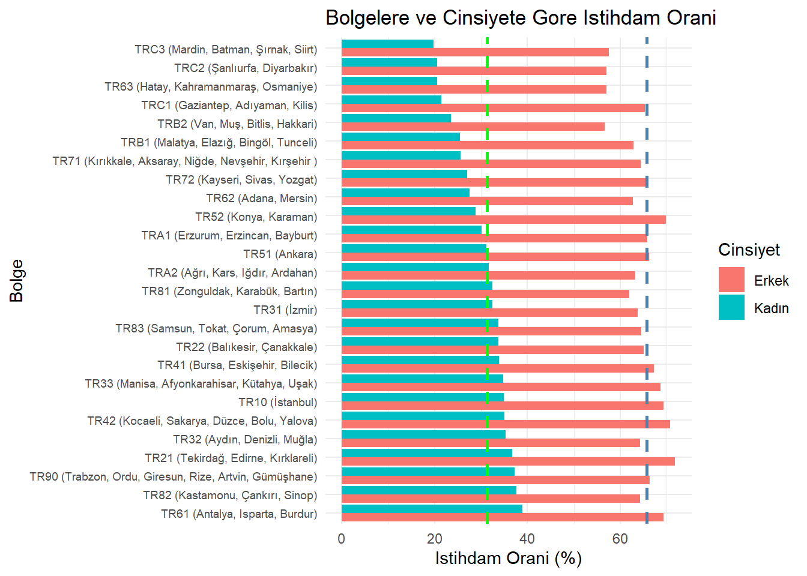
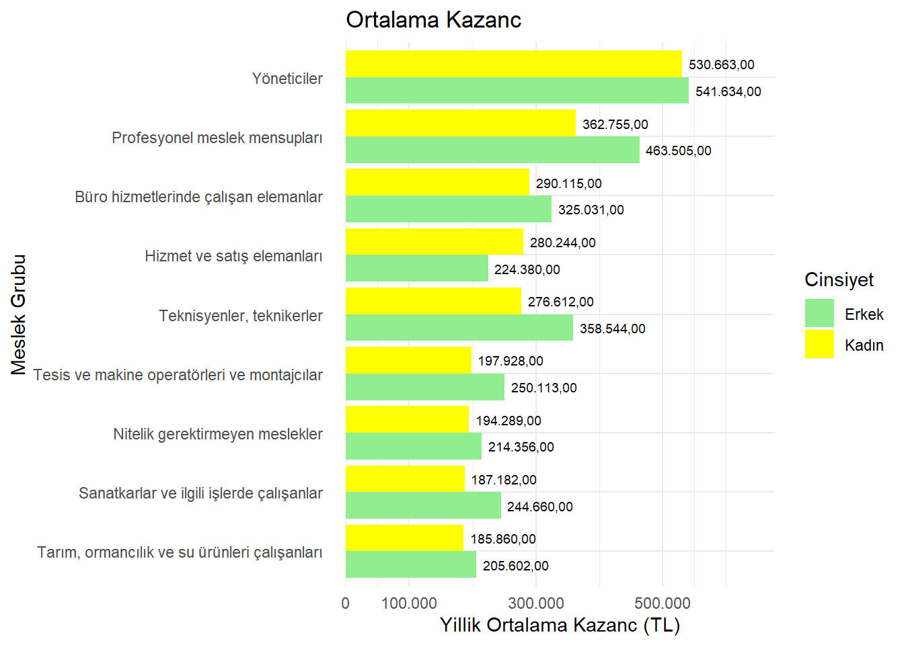
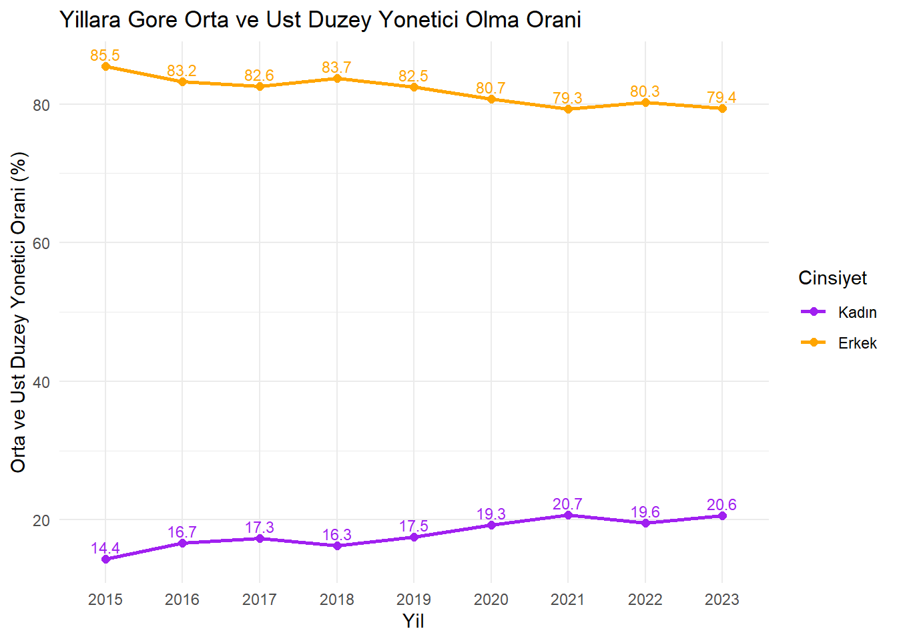
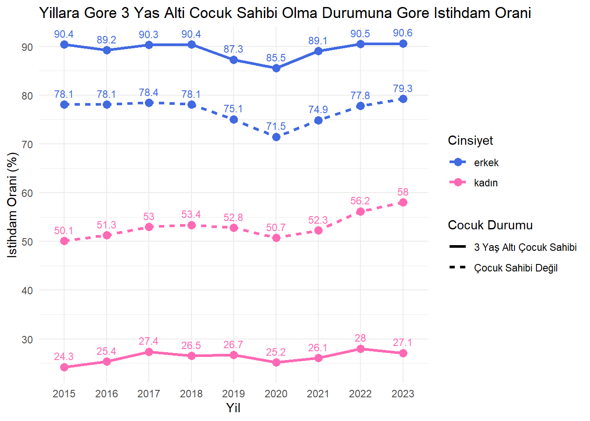
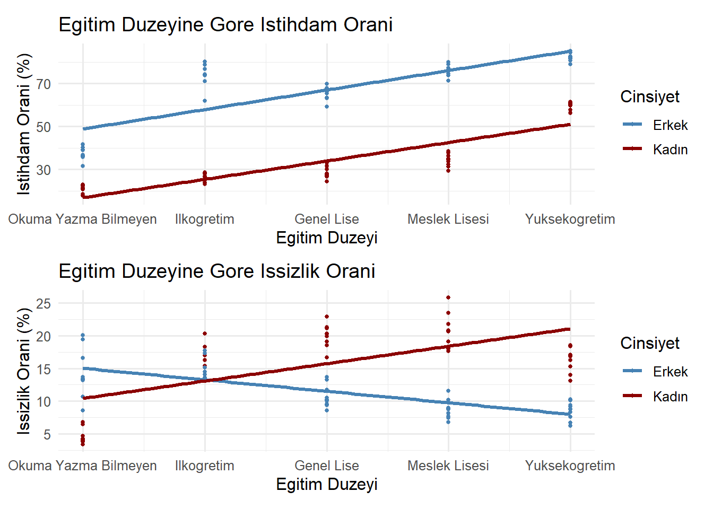

Türkiye’de Kadınların Sosyoekonomik Durumu Üzerine Veri Analitiği Temelli Bir İnceleme
Pınar MÜRTEZAOĞLU / Gamze KAZEL BOZKURT
1. Proje Genel Bakışı ve Kapsamı
Sosyal kalkınmanın sürdürülebilirliği için bireylerin yalnızca ekonomik değil, sosyal ve kültürel alanlarda da eşit fırsatlara sahip olması gerekmektedir. Ancak mevcut sosyoekonomik yapılar, özellikle kadınlar için bu fırsatlara erişimi engellemekte ve onları yapısal olarak dezavantajlı bir konuma itmektedir. Eğitim seviyeleri erkeklerle benzer olsa dahi, kadınlar istihdam ve işgücüne katılımda ciddi eşitsizliklerle karşılaşmaktadır.
Bu çalışma, kadın ve erkeklerin temel istihdam göstergelerini karşılaştırmalı olarak inceleyerek, toplumsal cinsiyete dayalı farkların yapısal nedenlerini ortaya koymayı amaçlamaktadır. Veri temelli analiz yaklaşımıyla politika yapıcılara yol gösterecek bulgular sunulması hedeflenmektedir. Çalışma kapsamında kullanılan veri seti açıklanmakta, cinsiyete göre eğitim, gelir, meslek ve bölgesel istihdam analiz edilmekte, ardından eğitim düzeyine göre regresyon modelleri kurulmakta ve elde edilen bulgular yorumlanarak öneriler sunulmaktadır.
2. Veri
2.1 Veri Kaynağı
Çalışma kapsamında iki ayrı veri seti kullanılmış ve birleştirilmiştir. Veriler, Türkiye İstatistik Kurumu (TÜİK) veri tabanından elde edilmiştir. Veri setinden bir tanesi, İstatistiklerle Kadın 2024 raporu kapsamında temin edilmiştir. Bu raporda kadınların eğitim, istihdam, kazanç ve yöneticilik durumlarına ilişkin istatistikler yer almaktadır. Verilere linke tıklayarak erişebilirsiniz: https://data.tuik.gov.tr/Bulten/Index?p=Istatistiklerle-Kadin-2024-54076. Diğer veri seti ise TÜİK Veri Portalı üzerinden İşgücü İstatistikleri(2014 ve sonrası) veritabanından oluşturulmuştur. Veri portalına linke tıklayarak erişebilirsiniz: https://data.tuik.gov.tr/Search/Search?text=i%C5%9Fg%C3%BCc%C3%BC. Veriler, TÜİK’in çevrimiçi veri portalından .xlsx formatında indirilmiştir.
2.2 Veriler Hakkında Genel Bilgi
Çalışmada; kadınların eğitim düzeyi, bölgesel düzeyde istihdam oranları, ücret farklılıkları, işgücü içindeki konumları gibi değişkenler ele alınmış, aynı değişkenler üzerinden erkeklerle karşılaştırmalı analizler yapılmıştır. Son yıla ait veriler (2015-2024) ele alınmıştır.
Bu proje kapsamında kullanılan veri setleri şunlardır:
bolge_duzeyi.xlsx: Türkiye’nin İBBS 2. düzey bölgelerine göre kadınların istihdam oranları.
cocuga_bagli_istihdam_orani.xlsx: 3 yaş altı çocuğu olan ve çocuğu olmayan bireylerin istihdam oranları.
meslek_gruplarina_gore_kazanc.xlsx: Meslek gruplarına göre yıllık ortalama kazançlar (kadın ve erkek).
yillik_kazanc.xlsx: Kadın ve erkeklerin yıllık kazançları (eğitim düzeyine göre).
yonetici.xlsx: Yönetici pozisyonundaki kadın ve erkek oranları.
isgucu_verisi.xlsx: Eğitim düzeyine ve cinsiyete göre işsizlik ve istihdam oranları.
2.3 Verilerin Seçilme Sebebi
Kadınların iş gücüne katılımı, Türkiye’de hem ekonomik büyüme hem de toplumsal cinsiyet eşitliği bağlamında kritik bir göstergedir. Bu veriler, kadınların iş gücü piyasasındaki konumlarını ve maruz kaldıkları yapısal eşitsizlikleri anlamak için seçilmiştir.
Projede amaç:
Cinsiyete dayalı istihdam farklılıklarını analiz etmek
Eğitim ve bölgesel etkenleri değerlendirmek
Kadınların kazanç, istihdam ve yönetici pozisyonlarındaki durumlarını ortaya koymaktır.
Bu çalışmada kullanılan veriler, kamuya açık ve ücretsiz olarak sunulan TÜİK veri tabanından elde edilmiştir. TÜİK, uluslararası standartlara uygunluğu ve ulusal düzeyde temsili veri sağlayabilme kapasitesi nedeniyle tercih edilmiştir.
2.4. Ön İşleme
Verileri analiz için uygun hale getirmek amacıyla bazı düzenlemeler yapılmıştır.
Bilinmeyen Veri (NA): Veri setinde yer alan İşgücü Verileri dosyasında, İlköğretim eğitim düzeyinde kadın ve erkek için 2021, 2022, 2023 ve 2024 yıllarına ait istihdam oranı ve işsizlik oranı verileri eksiktir (Toplam 16 veri). İşsizlik oranındaki eksik verileri tamamlamak için cinsiyete göre ilköğretim düzeyindeki verilerin ortalaması alınmış; aynı işlem istihdam oranı için de tekrarlanmıştır.
Eğitim Düzeyi: Eğitim düzeyine dair veriler sıralı sayı haline getirilmiştir. Veri tablolarında eğitim düzeyleri; okuma yazma bilmeyen, ilköğretim, genel lise, lise dengi mesleki okul, yükseköğretim şeklinde beş kategoriye ayrılmıştır. Analizi kolaylaştırmak için eğitim düzeyleri sırasıyla 1,2,3,4 ve 5 olarak tanımlanmıştır.
Düzenlenen veri kümeleri, gelecekteki oturumlar için yeniden üretilebilirlik ve daha hızlı işleme için birleştirilere .RData biçiminde kadın_projesi_verisi.RData ismiyle kaydedilmiştir.
Düzenlenmiş veri setine bir örnek olması için 5 sütun, 100 satırdan oluşan işgücü verisinin ilk 10 satırı aşağıda sunulmuştur:
Kodu Görmek İçin Tıklayınız
library(knitr)kable(head(isgucu_verisi, 10), caption ="Tablo: 2015-2024 Yillari Cinsiyete Gore Isgucu Verisi")
Tablo: 2015-2024 Yillari Cinsiyete Gore Isgucu Verisi
yil
cinsiyet
egitim_duzeyi
issizlik_orani
istihdam_orani
2015
Kadın
Okuma yazma bilmeyen
3.4
22.1
2015
Kadın
Ilkogretim
15.1
23.8
2015
Kadın
Genel lise
20.3
26.6
2015
Kadın
Lise dengi mesleki okul
18.1
34.5
2015
Kadın
Yuksekogretim
16.3
61.0
2016
Kadın
Okuma yazma bilmeyen
3.8
21.3
2016
Kadın
Ilkogretim
16.3
27.8
2016
Kadın
Genel lise
21.1
27.2
2016
Kadın
Lise dengi mesleki okul
20.6
33.9
2016
Kadın
Yuksekogretim
16.9
60.3
3.Analiz
Çalışmanın temel amacı, Türkiye’de işgücü piyasasında eğitim seviyesine göre cinsiyet farklılıklarını belirlemektir. Bu kapsamda çeşitli grafikler çizilmiş ve regresyon analizi yapılmıştır.
3.1. Keşifsel Veri Analizi
3.1.1. Veri Setine Genel Bakış
Veri seti 6 ayrı veriden oluşmaktadır. Verilere dair ayrıntılı bilgi aşağıda yer almaktadır:
Değişkenler: yil: 2015-2024 yılları cinsiyet: Kadın ve Erkek egitim_duzeyi: Okuma yazma bilmeyen, ilköğretim, genel lise, lise dengi mesleki okul, yükseköğretim olmak üzere beş seviye istihdam_orani: istihdam oranı(%) issizlik_orani: işsizlik oranı (%)
bolge_duzeyi
Değişkenler: bolge: İBBS 2. düzey bölgeleri(26 bölge) cinsiyet: Kadın ve Erkek istihdam_orani: İstihdam oranı (%)
cocuga_bagli_istihdam_orani
Çocuk sahibi olma durumuna Değişkenler: yil: 2015-1023 yılları cinsiyet: Kadın ve Erkek 3yasalti_cocuk_olan_istihdam_orani: Üç yaş altı çocuk sahibi olanların istihdam oranı(%) cocuk_olmayan_istihdam_orani: Üç yaş altı çocuk sahibi olmayanların istihdam oranı (%)
meslek_gruplarina_gore_kazanc
Değişkenler: yil:2023 yılı cinsiyet: Kadın ve Erkek meslek: Çeşitli meslek grupları yillik_ort_kazanc: Yıllık ortalama kazanç(TL)
yillik_kazanc
Değişkenler: yil: 2023 cinsiyet: Kadın ve Erkek egitim_duzeyi: İlkokul ve altı, ilköğretim ve ortaokul,lise, yükseköğretim olmak üzere dört düzey yillik_ort_brüt_kazanc: Yıllık ortalama brüt kazanç (TL)
yonetici
Değişkenler: yil: 2015-2023 yılları cinsiyet: Kadın ve Erkek orta_üst_yönetici_orani: Orta ve üst yönetici oranı(%)
3.2. Görselleştirme ve Analiz
Kadınların işgücü piyasasındaki konumlarını anlamamıza yardımcı olması amacıyla her bir veri setinden grafikler çizilmiş ve yorumlanmıştır.
Bölgelere Göre İstihdam Oranı
Bölge ve cinsiyete göre istihdam oranlarına ait grafiğe bakıldığında her bölgede erkek istihdam oranının kadın istihdam oranından fazla olduğu görülmektedir. 2023 yılında 15 ve daha yukarı yaştaki kadın nüfusun istihdam oranı %31,3, erkek nüfusun istihdam oranı ise %65,7’dir. İBBS 2.Düzeye göre en yüksek kadın istihdam oranı, %38,9 ile TR61 (Antalya, Isparta, Burdur) bölgesinde, en düşük kadın istihdam oranı ise %19,8 ile TRC3 (Mardin, Batman, Şırnak, Siirt) bölgesinde gerçekleşmiştir.
Kadın istihdamının en az olduğu beş bölgeye bakıldığında neredeyse tamamının Doğu ve Güneydoğu bölgelerindeki illerden oluştuğu dikkat çekmektedir.
Hemen her bölgede erkeklerin istihdam oranının kadınlara kıyasla anlamlı şekilde daha yüksek olduğu görülmektedir. Bu durum, toplumsal cinsiyet temelli istihdam eşitsizliğinin bölgesel düzeyde yaygın bir sorun olduğunu ortaya koymaktadır.
Kodu Görmek İçin Tıklayınız
# Geçici bir ortamda sadece bolge_duzeyi verisini yükletemp_env <-new.env()load("kadın_projesi_verisi.RData", envir = temp_env)# İlgili veri setini alveri <- temp_env$bolge_duzeyi# Kadın istihdam oranına göre sıralı bölge listesi oluştursirali_bolgeler <- veri %>%filter(cinsiyet =="Kadın") %>%arrange(desc(istihdam_orani)) %>%pull(bolge)# Bolgeyi sıralı faktöre çevir (grafikte sıralı görünsün)veri$bolge <-factor(veri$bolge, levels = sirali_bolgeler)# Türkiye ortalamalarıortalama_kadin <-31.3ortalama_erkek <-65.7# Grafikggplot(veri, aes(x = istihdam_orani, y = bolge, fill = cinsiyet)) +geom_bar(stat ="identity", position ="dodge") +geom_vline(xintercept = ortalama_kadin, color ="green", linetype ="dashed", linewidth =1) +geom_vline(xintercept = ortalama_erkek, color ="steelblue", linetype ="dashed", linewidth =1) +labs(title ="Bolgelere ve Cinsiyete Gore Istihdam Orani",x ="Istihdam Orani (%)", y ="Bolge", fill ="Cinsiyet") +theme_minimal() +theme(axis.text.y =element_text(size =7))

Eğitim Durumuna Göre Yıllık Kazanç Durumu
Eğitim düzeyine göre kadın ve erkek için yıllık kazanç miktarları grafiğine bakıldığında 2023 yılı verilerine göre kazanç düzeylerinin hem erkeklerde hem de kadınlarda eğitim durumu ile birlikte yükseldiği görülmektedir. Ancak eğitim seviyesi arttıkça cinsiyetler arası kazanç farkı belirginleşmektedir. Bu durum, özellikle yükseköğretim mezunları arasında ciddi bir gelir eşitsizliğine işaret etmektedir. Eğitim durumuna göre en yüksek yıllık ortalama brüt kazancı yükseköğretim eğitim düzeyine sahip olanlar elde etmiş olup, bu eğitim düzeyinde yıllık ortalama brüt kazanç erkeklerde 431 bin 364 TL, kadınlarda ise 354 bin 149 TL olmuştur. Tüm seviyelerde erkek ve kadın aynı eğitim düzeyinde olmasına rağmen erkeklerin yıllık ortalama brüt kazancının kadınlardan fazla olduğu görülmektedir.
Kodu Görmek İçin Tıklayınız
library(readxl)library(ggplot2)library(tidyr)library(dplyr)library(readr)# Geçici bir ortam oluştur ve .RData dosyasını yükletemp_env <-new.env()load("kadın_projesi_verisi.RData", envir = temp_env)# Sadece yillik_kazanc verisini alveri <- temp_env$yillik_kazanc# Sütun adlarını ASCII karakterlerine dönüştürnames(veri) <-iconv(names(veri), from ="", to ="ASCII//TRANSLIT")# Grafik oluşturggplot(veri, aes(x =reorder(egitim_duzeyi, yillik_ort_brut_kazanc), y = yillik_ort_brut_kazanc, fill = cinsiyet)) +geom_bar(stat ="identity", position ="dodge") +geom_text(aes(label =paste0(format(yillik_ort_brut_kazanc, big.mark =".", decimal.mark =","), ",00")), position =position_dodge(width =0.9), vjust =-0.3, size =3) +scale_y_continuous(labels = scales::comma_format(big.mark =".", decimal.mark =",")) +labs(title ="Egitim Duzeyine Gore Yillik Ortalama Brut Kazanc",x ="Egitim Duzeyi", y ="Yillik Kazanc (TL)", fill ="Cinsiyet") +theme_minimal()

Meslek Gruplarına Göre Kazanç Durumu
Meslek gruplarına göre kadın ve erkek için yıllık ortalama kazanç verilerinden elde edilen grafik gösterilmektedir. 2023 yılı verilerine göre, kadınlarda en yüksek yıllık ortalama brüt kazancı 530.663,00 TL ile yöneticiler meslek grubunda çalışanlar elde etmiştir. Yönetici pozisyonunda çalışan erkek ve kadınlar arasında yıllık ortalama kazançlarında farklılığın düşük olduğu dikkat çekmektedir. En düşük yıllık ortalama brüt kazanç ise 185.860,00 TL ile nitelikli tarım, ormancılık ve su ürünleri çalışanları grubunda gerçekleşmiştir. Yalnızca “Hizmet ve servis elemanları” meslek grubunda çalışan kadınlar aynı meslek grubunda çalışan erkeklere göre daha fazla yıllık ortalama kazanç elde etmiş, diğer tüm meslek gruplarında erkekler kadınlardan daha fazla yıllık ortalama kazanç sağlamıştır.
Kodu Görmek İçin Tıklayınız
library(readxl)library(ggplot2)library(tidyr)library(dplyr)library(readr)library(scales)# Geçici bir ortam oluştur ve RData dosyasını yükletemp_env <-new.env()load("kadın_projesi_verisi.RData", envir = temp_env)# İlgili veri setini alveri <- temp_env$meslek_gruplarina_gore_kazanc# Veriyi meslek ve cinsiyete göre sıralayınveri <- veri %>%group_by(meslek, cinsiyet) %>%summarize(yillik_ort_kazanc =mean(yillik_ort_kazanc, na.rm =TRUE, .groups ="drop"))# Kadınlara göre meslek sıralamasısirali_meslekler <- veri %>%filter(cinsiyet =="Kadın") %>%arrange(yillik_ort_kazanc) %>%pull(meslek)# Sıralı faktör olarak ayarlaveri$meslek <-factor(veri$meslek, levels = sirali_meslekler)# Grafik oluşturmaggplot(veri, aes(x = meslek, y = yillik_ort_kazanc, fill = cinsiyet)) +geom_bar(stat ="identity", position ="dodge") +geom_text(aes(label =format(yillik_ort_kazanc, big.mark =".", decimal.mark =",", nsmall =2)),position =position_dodge(width =0.9), hjust =-0.1, size =2.5) +# ← etiketler çubuğun sağındacoord_flip() +scale_fill_manual(values =c("Kadın"="yellow", "Erkek"="lightgreen")) +scale_y_continuous(breaks =c(0, 100000, 300000, 500000),labels =label_number(big.mark =".", decimal.mark =",", accuracy =1),expand =expansion(mult =c(0, 0.25)) # ← boşluk bırak, çubukların sonunda etiketler için alan yarat ) +labs(title ="Ortalama Kazanc",x ="Meslek Grubu", y ="Yillik Ortalama Kazanc (TL)", fill ="Cinsiyet") +theme_minimal() +theme(axis.text.y =element_text(margin =margin(r =10)))

Üst ve Orta Düzey Yönetici Pozisyonundaki Görünüm
Yıllara göre kadın ve erkek için üst ve orta düzey yönetici olma oranı grafikte gösterilmektedir. Üst ve orta düzey yönetici pozisyonundaki kadın oranı 2015 yılında %14.4 iken 2023 yılında %20.6 olmuştur. Bu artış, kadınların liderlik pozisyonlarında görünürlüğünün zamanla arttığını göstermektedir. Ancak artış hızı yavaş ve sınırlı kalmıştır. Bu oran erkeklerde 2015 yılında %85.5 iken 2023 yılında %79.4 olarak gerçekleşmiştir. Bu düşüş, kadınların yönetime daha fazla dâhil olmaya başladığını gösterse de, erkekler hâlâ yönetici pozisyonlarının büyük çoğunluğunu elinde bulundurmaktadır. 2015-2023 yıllarındaki orta ve üst düzey yönetici oranları incelendiğinde tüm yıllarda kadınların yönetici pozisyonunda erkeklerle kıyaslandığında çok daha az yer bulabildiği görülmektedir.
Kodu Görmek İçin Tıklayınız
library(readxl)library(ggplot2)library(tidyr)library(dplyr)library(readr)# Geçici ortam oluştur ve .RData dosyasını yükletemp_env <-new.env()load("kadın_projesi_verisi.RData", envir = temp_env)# Sadece 'yonetici' verisini alveri <- temp_env$yonetici# Sütun adlarını ASCII formatına çevir (Türkçe karakter hatası önlemi)names(veri) <-iconv(names(veri), from ="", to ="ASCII//TRANSLIT")# Veriyi düzenleveri <- veri %>%mutate(cinsiyet =as.character(cinsiyet),orta_ust_yonetici_orani =as.numeric(orta_ust_yonetici_orani) ) %>%filter(cinsiyet %in%c("Kadın", "Erkek")) %>%mutate(cinsiyet =factor(cinsiyet, levels =c("Kadın", "Erkek")))# Grafik oluşturggplot(veri, aes(x =as.factor(yil), y = orta_ust_yonetici_orani, color = cinsiyet, group = cinsiyet)) +geom_line(linewidth =1) +geom_point(size =2) +geom_text(aes(label =sprintf("%.1f", orta_ust_yonetici_orani)),vjust =-0.5,size =3,show.legend =FALSE ) +labs(title ="Yillara Gore Orta ve Ust Duzey Yonetici Olma Orani",x ="Yil",y ="Orta ve Ust Duzey Yonetici Orani (%)",color ="Cinsiyet") +scale_color_manual(values =c("Kadın"="purple", "Erkek"="orange")) +theme_minimal()

Çocuğa Bağlı İstihdam Oranı
Üç yaş altı çocuk sahibi olma durumuna göre kadın ve erkek için yıllara göre istihdam oranları grafikte gösterilmektedir. 2023 yılında hanesinde 3 yaşın altında çocuğu olan 25-49 yaş grubundaki kadınların istihdam oranının %27,1, erkeklerin istihdam oranının ise %90,6 olduğu görülmüştür. 2023 yılında çocuk sahibi olmayan kadınların istihdam oranı %58 iken, erkekler için bu oran %79.3’tür.
2015-2023 yılları için veriler incelendiğinde çocuk sahibi olmayan kadınların istihdam oranının, 3 yaş altı çocuk sahibi olan kadınlara kıyasla tüm yıllar için neredeyse iki katı olduğu görülmektedir. Bu durum erkeklerde ters etki yaratmaktadır. 3 yaş altı çocuk sahibi olan erkeklerin istihdam oranı, çocuk sahibi olmayanlara göre daha fazladır. Bu grafik, bakım yükümlülüklerinin cinsiyetler arasında eşit dağılmadığını açıkça göstermektedir. Erkeklerin çocuk sahibi olduktan sonra istihdam oranları büyük ölçüde korunurken, kadınların istihdam oranı keskin şekilde düşmektedir.
Kodu Görmek İçin Tıklayınız
library(readxl)library(ggplot2)library(tidyr)library(dplyr)library(readr)# Geçici bir ortam oluştur ve .RData dosyasını yükletemp_env <-new.env()load("kadın_projesi_verisi.RData", envir = temp_env)# Veriyi çağırveri <- temp_env$cocuga_bagli_istihdam_orani# Uzun formata dönüştür (pivot_longer)veri_long <- veri %>%pivot_longer(cols =c("3yasalti_cocuk_olan_istihdam_orani", "cocuk_olmayan_istihdam_orani"), names_to ="cocuk_durumu", values_to ="istihdam_orani" ) %>%mutate(cocuk_durumu =recode(cocuk_durumu, "3yasalti_cocuk_olan_istihdam_orani"="3 Yaş Altı Çocuk Sahibi","cocuk_olmayan_istihdam_orani"="Çocuk Sahibi Değil" ))# Grafik oluşturggplot(veri_long, aes(x =as.factor(yil), y = istihdam_orani, color = cinsiyet, linetype = cocuk_durumu, group =interaction(cinsiyet, cocuk_durumu))) +geom_line(linewidth =1.2) +geom_point(size =3) +geom_text(aes(label =round(istihdam_orani, 1)), vjust =-0.9, size =3, show.legend =FALSE) +labs(title ="Yillara Gore 3 Yas Alti Cocuk Sahibi Olma Durumuna Gore Istihdam Orani",x ="Yil",y ="Istihdam Orani (%)",color ="Cinsiyet",linetype ="Cocuk Durumu") +scale_x_discrete(breaks =unique(veri_long$yil)) +scale_y_continuous(breaks =seq(0, 90, by =10)) +theme_minimal() +scale_color_manual(values =c("royalblue", "hotpink"))
Analiz
işgücü verileri kullanılarak iki temel model oluşturulmuştur: İstihdam Oranı Modeli ve İşsizlik Oranı Modeli.
Analizde, cinsiyet ve eğitim düzeyi arasındaki etkileşimi gözlemlemek için doğrusal regresyon modelleri kullanılmıştır.
İstihdam Oranı Modeli
İstihdam oranı, işgücünün hangi oranda ekonomik faaliyetlere katılabildiğini göstermesi bakımından önemlidir. İstihdam edilen kişilerin kurumsal olmayan çalışma çağındaki nüfusa oranı, istihdam oranını ifade etmektedir. Bu modelde, istihdam oranı bağımlı değişken olarak alınmış, eğitim düzeyi ve cinsiyet bağımsız değişken olarak modele dahil edilmiştir. Model, eğitim düzeyi ve cinsiyet arasındaki etkileşimi de göz önünde bulunduracak şekilde formüle edilmiştir:
İşsizlik oranı, bir ekonomide işi olmayıp iş arayanların işgücüne oranıdır. İşsizlik oranı ekonominin performansını yansıtması bakımından oldukça önemlidir. Bu modelde işsizlik oranı bağımlı değişken olarak kullanılmış ve benzer şekilde eğitim düzeyi ile cinsiyet arasındaki etkileşim dikkate alınarak analiz edilmiştir:
# Geçici ortam oluştur ve RData dosyasını yükletemp_env <-new.env()load("kadın_projesi_verisi.RData", envir = temp_env)# Veriyi alveri <- temp_env$isgucu_verisi# Eksik verileri grup ortalaması ile doldurveri <- veri %>%group_by(cinsiyet, egitim_duzeyi) %>%mutate(issizlik_orani =ifelse(is.na(issizlik_orani), mean(issizlik_orani, na.rm =TRUE), issizlik_orani),istihdam_orani =ifelse(is.na(istihdam_orani), mean(istihdam_orani, na.rm =TRUE), istihdam_orani) ) %>%ungroup()# Eğitim düzeyine sıralama ekleveri <- veri %>%mutate(egitim_sira =case_when( egitim_duzeyi =="Okuma yazma bilmeyen"~1, egitim_duzeyi =="Ilkogretim"~2, egitim_duzeyi =="Genel lise"~3, egitim_duzeyi =="Lise dengi mesleki okul"~4, egitim_duzeyi =="Yuksekogretim"~5,TRUE~NA_real_ ))# Cinsiyeti faktöre çevirveri$cinsiyet <-factor(veri$cinsiyet)# Regresyon modellerimodel_istihdam <-lm(istihdam_orani ~ egitim_sira * cinsiyet, data = veri)model_issizlik <-lm(issizlik_orani ~ egitim_sira * cinsiyet, data = veri)summary(model_istihdam)
Call:
lm(formula = istihdam_orani ~ egitim_sira * cinsiyet, data = veri)
Residuals:
Min 1Q Median 3Q Max
-17.3513 -6.2798 -0.5857 4.2327 22.2960
Coefficients:
Estimate Std. Error t value Pr(>|t|)
(Intercept) 39.7987 2.7273 14.593 < 2e-16 ***
egitim_sira 9.0527 0.8223 11.009 < 2e-16 ***
cinsiyetKadın -31.4200 3.8570 -8.146 1.39e-12 ***
egitim_sira:cinsiyetKadın -0.5140 1.1629 -0.442 0.659
---
Signif. codes: 0 '***' 0.001 '**' 0.01 '*' 0.05 '.' 0.1 ' ' 1
Residual standard error: 8.223 on 96 degrees of freedom
Multiple R-squared: 0.8679, Adjusted R-squared: 0.8638
F-statistic: 210.2 on 3 and 96 DF, p-value: < 2.2e-16
Kodu Görmek İçin Tıklayınız
summary(model_issizlik)
Call:
lm(formula = issizlik_orani ~ egitim_sira * cinsiyet, data = veri)
Residuals:
Min 1Q Median 3Q Max
-7.974 -2.178 0.311 2.336 7.390
Coefficients:
Estimate Std. Error t value Pr(>|t|)
(Intercept) 16.7780 1.2305 13.635 < 2e-16 ***
egitim_sira -1.7540 0.3710 -4.728 7.78e-06 ***
cinsiyetKadın -9.0240 1.7401 -5.186 1.19e-06 ***
egitim_sira:cinsiyetKadın 4.4180 0.5247 8.420 3.63e-13 ***
---
Signif. codes: 0 '***' 0.001 '**' 0.01 '*' 0.05 '.' 0.1 ' ' 1
Residual standard error: 3.71 on 96 degrees of freedom
Multiple R-squared: 0.5257, Adjusted R-squared: 0.5109
F-statistic: 35.47 on 3 and 96 DF, p-value: 1.624e-15
Kodu Görmek İçin Tıklayınız
# Grafik tema ve renk ayarlarımy_colors <-c("Kadın"="darkred", "Erkek"="steelblue")my_theme <-theme_minimal(base_size =12)# Grafik 1: İstihdam Oranıg1 <-ggplot(veri, aes(x = egitim_sira, y = istihdam_orani, color = cinsiyet)) +geom_point(size =3) +geom_smooth(method ="lm", se =FALSE, linewidth =1.2) +scale_color_manual(values = my_colors) +scale_x_continuous(breaks =1:5,labels =c("Okuma Yazma Bilmeyen", "Ilkogretim", "Genel Lise", "Meslek Lisesi", "Yuksekogretim") ) +labs(title ="Egitim Duzeyine Gore Istihdam Orani",x ="Egitim Duzeyi", y ="Istihdam Orani (%)", color ="Cinsiyet") + my_theme# Grafik 2: İşsizlik Oranıg2 <-ggplot(veri, aes(x = egitim_sira, y = issizlik_orani, color = cinsiyet)) +geom_point(size =3) +geom_smooth(method ="lm", se =FALSE, linewidth =1.2) +scale_color_manual(values = my_colors) +scale_x_continuous(breaks =1:5,labels =c("Okuma Yazma Bilmeyen", "Ilkogretim", "Genel Lise", "Meslek Lisesi", "Yuksekogretim") ) +labs(title ="Egitim Duzeyine Gore Issizlik Orani",x ="Egitim Duzeyi", y ="Issizlik Orani (%)", color ="Cinsiyet") + my_theme# İki grafiği birlikte gösterg1 / g2 +plot_layout(ncol =1)

4. Bulgular
Bu çalışmada, eğitim düzeyi ile istihdam ve işsizlik oranları arasındaki ilişkiler, cinsiyet farklılıkları dikkate alınarak oluşturulan iki ayrı etkileşimli doğrusal regresyon modeli ile analiz edilmiştir. Her iki modelde de eğitim düzeyi (egitim_sira), cinsiyet ve bu iki değişkenin etkileşim terimi bağımsız değişken olarak kullanılmıştır. Eğitim düzeyine göre kadın ve erkek için istihdam oranı ve işsizlik oranı grafiklerle sunulmuştur. Grafiklerde kullanılan eğri çizgiler, doğrusal regresyon eğilimlerini göstermektedir.
İstihdam oranı analizine göre; Erkek bireylerde eğitim düzeyindeki her bir artışın istihdam oranını ortalama %9,05 oranında artırdığı görülmektedir (p < 0.001). Cinsiyet değişkeni açısından bakıldığında, kadın bireylerin eğitim düzeyi sabit tutulduğunda, istihdam oranlarının erkek bireylere kıyasla ortalama %31,42 daha düşük olduğu anlaşılmaktadır (p < 0.001). Ancak, eğitim düzeyindeki artışın kadınların istihdam oranı üzerindeki etkisi erkeklere kıyasla istatistiksel olarak anlamlı bir farklılık göstermemektedir (p = 0.659). Bu durum, eğitim düzeyinin kadınların istihdamı üzerindeki pozitif etkisinin sınırlı ve belirsiz olduğunu düşündürmektedir. Modelin açıklayıcılığı oldukça yüksektir (R² = 0.87), bu da modelin istihdam oranındaki değişimin büyük kısmını başarılı şekilde açıkladığını göstermektedir.
İşsizlik oranı analizine göre; Erkek bireylerde eğitim düzeyindeki her bir artış, işsizlik oranında ortalama %1,75’lik bir azalma ile ilişkilidir (p < 0.001). Kadın bireyler için ise durum farklılık göstermektedir. Eğitim düzeyindeki her bir artış, kadınların işsizlik oranını ortalama %4,42 oranında artırmaktadır (p < 0.001). Bu bulgu, eğitim düzeyi yükseldikçe kadınların işsizlik riskinin arttığını göstermekte ve kadınların yüksek eğitim düzeyine sahip olsalar dahi işgücü piyasasına tam olarak entegre olamadıklarına işaret etmektedir. Ayrıca, kadınların işsizlik oranı, eğitim düzeyi sabit tutulduğunda, erkeklere kıyasla ortalama %9 daha düşüktür (p < 0.001). Ancak bu temel etki, eğitim düzeyine bağlı etkileşim dikkate alındığında değişkenlik göstermektedir. Modelin açıklayıcılığı orta düzeydedir (R² = 0.53).
Kadınlarda eğitim seviyesi arttıkça beklentiler de artıyor ama uygun iş bulamama ihtimali yüksek olduğundan işsizlik oranı artıyor olabilir. Ayrıca nitelikli kadın işgücünün çalışma hayatına tam olarak entegre olamaması, cam tavan etkisi, ataerkil yapılar gibi sosyal faktörler de bu durumu etkiliyor olabilir.
5. Sonuç ve Öneriler
Regresyon analizinden elde edilen bulgular, Türkiye’de eğitim düzeyinin istihdam ve işsizlik oranları üzerindeki etkisinin cinsiyet temelli anlamlı farklılıklar içerdiğini ortaya koymaktadır. Erkek bireylerde eğitim düzeyi arttıkça hem istihdam oranı yükselmekte hem de işsizlik oranı azalmaktadır. Buna karşılık, kadın bireylerde eğitim düzeyinin istihdam üzerindeki etkisi istatistiksel olarak anlamlı değildir; işsizlik oranı ise eğitim düzeyi arttıkça belirgin şekilde yükselmektedir.
Kadınların istihdam oranları, aynı eğitim düzeyine sahip erkeklere kıyasla ortalama %31 daha düşük seviyededir. Eğitim düzeyi yükseldikçe istihdam oranında artış beklenirken, bu artış kadınlar açısından hem daha sınırlı kalmakta hem de istatistiksel olarak anlamlılık taşımamaktadır. Diğer yandan, kadınların işsizlik oranı eğitim düzeyindeki her bir artışta ortalama %4’ün üzerinde artmaktadır. Bu bulgular, kadınların yüksek eğitim düzeyine sahip olmalarına rağmen istihdam edilme olasılıklarının düşük olduğunu ve işsizlik riskiyle daha fazla karşı karşıya kaldıklarını göstermektedir.
Bu durum, yalnızca eğitim düzeyinin artırılmasının kadınların işgücü piyasasındaki dezavantajlı konumlarını ortadan kaldırmak için yeterli olmadığını göstermektedir. Dolayısıyla, kadın istihdamını artırmaya yönelik politikaların yalnızca bireysel yetkinlikleri ve eğitim düzeylerini hedef alması değil; aynı zamanda yapısal ve kurumsal engelleri ortadan kaldırmaya yönelik toplumsal cinsiyet eşitliğine dayalı çok boyutlu yaklaşımlar içermesi gerektiği açıktır.
Türkiye’de kadınların istihdama dahil edilmesi, işsizlik oranlarının azaltılması ve her alanda mevcut durumlarının iyileştirilmesi konusunda çok daha fazla politika uygulanması, yeni politikalar oluşturulması ve en önemlisi istikrarlı bir duruş sergilenmesi gerekmektedir. Bu konuda yapılacak en önemli adımlardan biri toplumun bilinçlendirilmesidir. Bu amaçla kadınların çalışması kendilerinin ve ailelerinin ekonomik olarak güçlenmesini sağlarken aynı zamanda ülkenin de gelişmişlik seviyesine katkı sağlayacağı gerçeği topluma entegre edilmelidir.Kadınların işgücü piyasasındaki konumlarının iyileştirilmesi için yapılabilecek bir diğer düzenleme, politikalarda değişikliklerin yapılması ve eksikliklerin giderilmesidir. Türkiye’de annelik ve bakım konusundaki mevcut düzenlemelere babaların da dahil edilmesi, ücretli ebeveyn izinleri oluşturulması ve devletin daha çok kadının üzerinde olan bakım sorumluluğu için hizmet alanını genişletmesi gerekmektedir.Kadınların istihdama dahil olmasını teşvik eden politikalar söz konusu olmalıdır.Kadınların kariyerlerinde yükselmeleri için bütün kurumlarda cam tavan engelinin ortadan kaldırılması adına belirlenecek kota ile yönetim kademelerinde kadınlarında yer alması sağlanmalıdır.
Türkiye’de Kadınların Sosyoekonomik Durumu Üzerine Veri Analitiği Temelli Bir İnceleme – [Pınar Mürtezaoğlu]’s Analytics LabTürkiye’de Kadınların Sosyoekonomik Durumu Üzerine Veri Analitiği Temelli Bir İnceleme – [Pınar Mürtezaoğlu]’s Analytics LabTürkiye’de Kadınların Sosyoekonomik Durumu Üzerine Veri Analitiği Temelli Bir İnceleme – [Pınar Mürtezaoğlu]’s Analytics Lab[Pınar Mürtezaoğlu]’s Analytics Lab